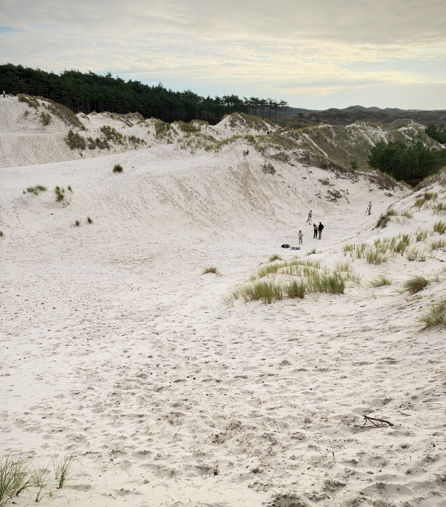
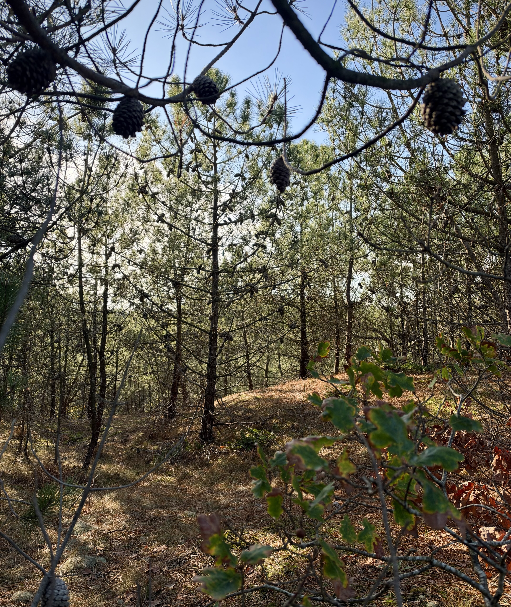
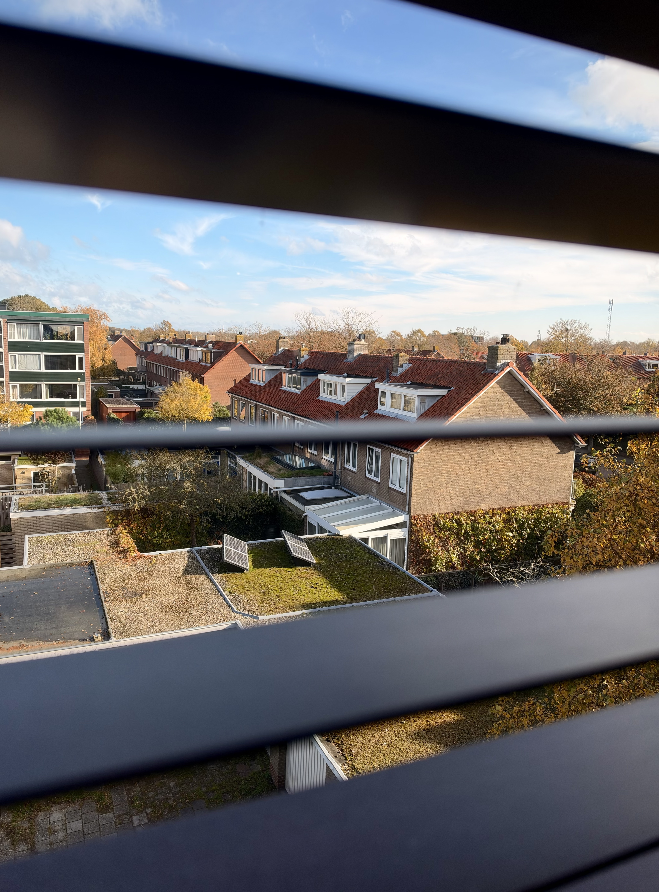
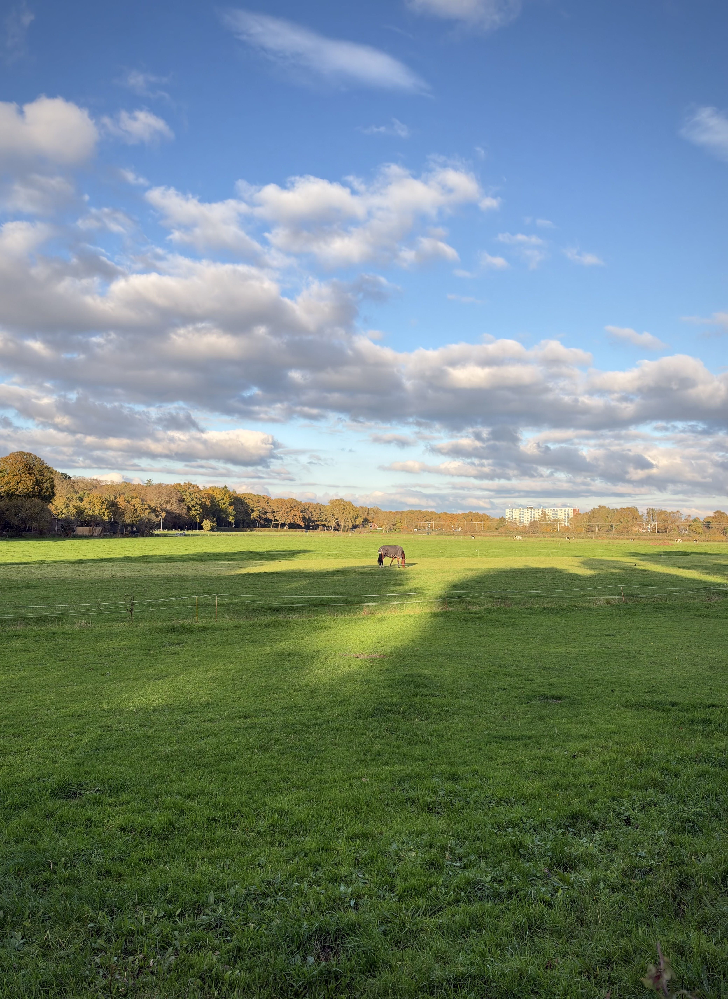
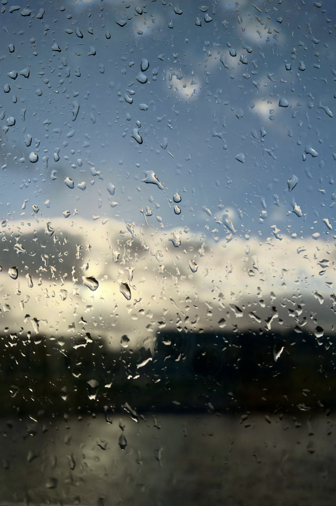
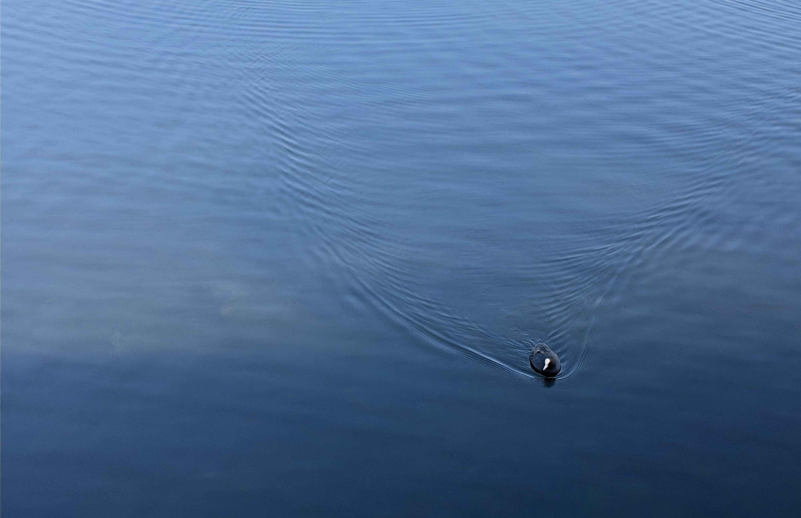
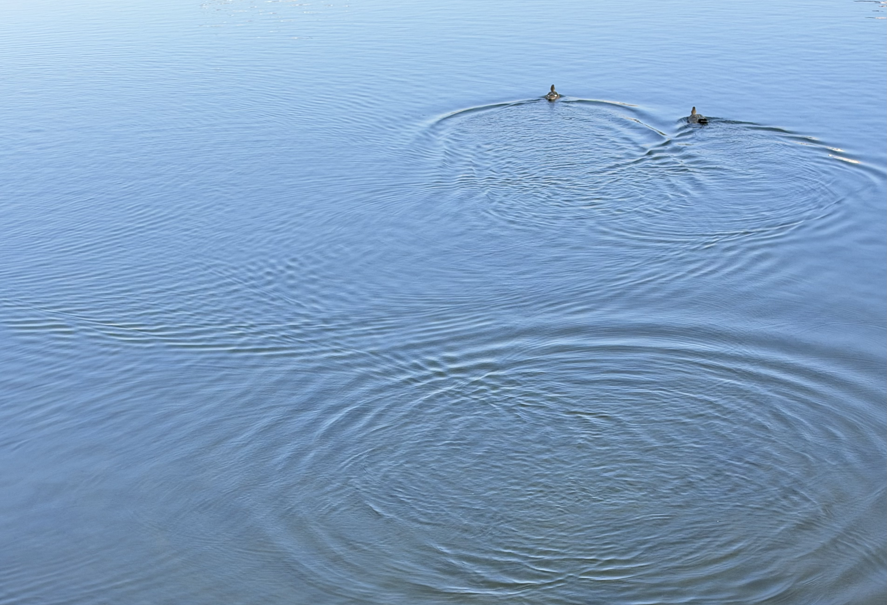
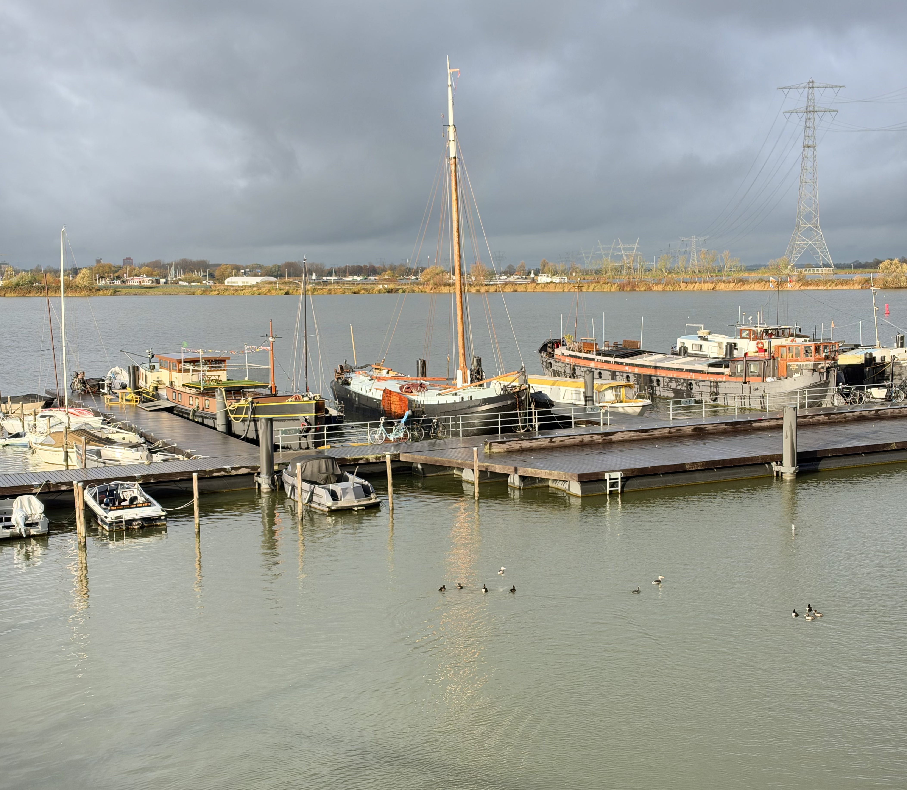

白沙
星期日下午在国家公园行走了三个小时，看到了从未见过的白色沙丘、艳红色的蘑菇，还有枝干的走势张狂不羁的松树。
天气半阴半晴，阳光忽然倾落的时候，坡地上显现舞动的光斑，天空透亮旷远。视野里颜色的分布格外丰富。松林的墨绿色和其他落叶树的橙色交杂掩映，白色的沙地和铺陈着斑杂的针叶的林地相互托衬。
在沙丘上走路，有时踩到硬实一点的湿沙，有时踩到蓬软不成形的干沙。草就像反抗打理的头发从沙子中间冒出来，在坡地上，在沙丘顶端，无视人类的行迹，无视寒气的告诫。
沙丘的侧面被风吹出纹路，就像峡谷侧面岩石的纹路。光落在起伏的沙丘上，投下淡淡的大面积的阴影。没有树干将光的领土分割，没有建筑将光的宿地霸占。
人类站在视野的远方望向更远方，朝海的那边，透过云层的缝隙带有丁达尔效应的光束洒下，洒下只能用极目远眺才能接住的启示。
朝陆地的那边，丛丛簇簇的灌木，掩盖着足迹，收听着诉说。
朝盆地中央空旷处望去，或是越过盆地望向对面的白沙，人类变成了匍匐的甲虫。我蹲下，将右手按在沙子上，按得的手印每根手指都出奇圆乎。
我想躺下，不像是躺在长椅上时那样身体是一根板直的杆，而是像张开五指的手那样张开四肢，摆成一个大字，覆盖空间。
我想头朝下滑行至盆地底部，被大地承载，被天空端详。飞鸟横越稀疏的阴云，排成并不完美的人字。队形时而变换成两个人字，时而复原。
在高处受风，在低处呼啸，在空白处思索着填进点儿什么，在满溢处又盼望着收缩，洁简，与净化。
一批一批的欢喜，劳苦，无错，与离别，一批一批地被降解，回落至泥土，如同静静铺在地上的松针，如今承载着行人的足迹，
宽慰着今年新落下还在挣扎着抵抗被降解的叶子：“你去看看那长青的松，你将找不到任何一支长青的针叶。”
曲折的枝干，有它们自己的去向。为何这样的树形令我着迷？似乎，它们懂得追踪朝露颁布的隐秘告示，懂得掩护密林深处迷路的光束。
如果拿来生命里不愿让步的那部分自己，让她躺下，就像星期日的我躺在松针铺陈的沙丘上一样 —— 眼前，树枝来自两侧向中间生长，仿佛即将合上的幕布，
只留下中间一条细缝，容下一小片葡萄绿的草地，和一小片薄荷蓝的天空 —— 那么，或许她将感受到额外的呵护；惶恐给迷惑腾出地盘，乡愁给渴望让步；
寡言和静默修缮内在的余地，技能偷偷拓展以协调喋喋不休的催促。
一架飞机划过，它定义了一些乘客的前途。
又来一架飞机 …… 每一架都会引我留目。
一些在昨日已经装箱的踟蹰，
进入巡航后，在慷慨的穹宇下放肆地开敞，
跃进云海层层叠浪，
被水汽包裹，翻滚，吞吐。
也许这些踟蹰也懂得追踪朝露。它们的行径，也好似被密林掩护的光束。正如行李一样，一块一块我的碎片，
积年累月，已经装满数个占地方大的包裹。多个包裹，不得不被压缩打包，存放在干燥阴凉通风背光的地方。
如果，想要打探的自己，想要拓展的自己，想要叩问的自己，想要参透的自己，和不愿让步的自己，
可以暂时谢绝推敲，婉拒回顾，那么我的碎片们将极度和睦。
如果暂时放下审视，计划，寻找，与盘算，那么我将极度幸福。


三只吊灯，叶片，和蜡烛
我搬来Santpoort-Noord住在一栋三层公寓的顶层。巨大的落地窗，在无风无雨无云无雾的时候，
客厅里到处都洒满成束的光芒。我望向窗外，周边的房顶，飞鸟，和蓝天。叶子掉了一半的树，还剩黄灿灿的半身。
往年的秋日，抑郁，疾苦，忧愁，焦躁不安的程度和缘由各不相同，但共同点都是：无所适从。
2020年的秋天，确定感薄如蝉翼。展望是耗费体力的，因为展望到的，皆是严峻的锤炼。
前方只有严峻和尚未预料到的严峻，当下或许还有余地及时行乐。
2021年的秋天，惶恐，无处喘息，没有余地审视，没有余地叩问。街道上一旦刮起了风，世界就是萧索的，就是无动于衷的。
我像是“床头屋漏无干处”一般捉襟见肘，透支着身心平衡，从虚幻的憧憬中吸食勉励。
2022年的秋天，无望，丧失憧憬，苍白，下坠，跌落，拾不起自己。任何带有色彩的泡泡都在分秒之间消失殆尽。
哄骗，自我设限，和回避被拿来烹制出权宜之计以平息疲惫与枯槁。晴空湛蓝，秋风温柔时，满树的金黄，满地的碎光，是灿烂的，是热烈的。
我被捧在一个泡泡里上浮，换气，然后在日暮的色调变暗沉仅仅一个度时，即刻被夺走一切温热。企图用蜡烛增加暖色，蜡烛不幸与下坠和枯槁挂上了钩。
四个春秋太长，或许自己余下的生命，还不如它长。
2023年的秋天，狰狞，每一个夜晚都是新的难题，向前的路和撤退的路都是没有边际的尘霾。
阅读，没有用途。走路，没有用途。没有结构，没有支撑，没有怜悯。巴士，是灰色的代言。脸上无力做出表情。血色，是奢侈的。憧憬，很自不量力。
祈祷，很哗众取宠。街上的萧索，是一览无余的。
2024年的秋天，渺小，微不足道，在同一个地方跌倒，似乎我从未拾起过自己啊！薄情的清晨，薄情的黄昏。秋色令人垂涎，
由它昭示的冬日，降了几分令人胆战心惊恫吓，可依旧教人不寒而栗。阅读，带来心慌，但依然阅读。同一张餐厅的桌子，前日还孤苦伶仃，后日已有圣诞树依傍。
纸张上的字句，是惊涛骇浪中的水滴，不足挂齿，不知与这无涯的汪洋相比，我吸收点水滴有甚么用途。行走，带来支撑，颤颤巍巍的支撑。
爬行，爬过无知，爬过聒噪，在爬行中乞求赠予与归还的车轮莫将我弃之不顾。
2025年的秋天，慌乱，大难临头。去看水，闹中取静。躺在地上观天，渴求指引，渴求回应。想要挣脱，却说不清是什么在束缚。
想要做一棵树，无人照怀，无声生长。无法无视自己的奇异形状，想要顺应，却说不清是什么在阻挡。想要求助，却说不清是什么在呵斥。
2026年的秋天，不断被提醒，不断被拷问。不可言说的无所适从，又被轻触，又被确认。不自主地打开音乐播放器，
音符里流动着绵长婉转的祝愿，节奏里敲击着没有答案的疑问。广大的可能性，既带来自由，也带来不安和纠结。但有更多东西是我向往的。
蜡烛，让某个曾经坚硬的防卫融化；吊灯，让某个曾经羞于见人的潜力不再隐藏。角落里的温度计显示19.5摄氏度。
龟背竹种在一个瘦高的花盆里，叶片毫不收敛地在占据整面墙的窗户的一个象限里活跃气氛。
在这样一个没有防备的时刻，忽然对往后的日子生出兴致：
或许夜深人静时，未来的自己会来看我，会在我身旁静静坐下。我让她分享最近生活里的小事，她一言不发，却也并未产生距离。
我开口问：你知不知道，神秘，是我喜欢的样子？她说：我知道。
我吐露我的不解，好奇，隐忧，与胡言乱语，她说：正是这样。
黑色的蓝牙音箱站立在桌子一角。一支曲子里盘旋着一个问句：“你到底想去哪儿？你没有回答。”
日色将尽，屋顶上的亮色渐渐退去，玻璃里浮出客厅的倒影，还有写字台，电脑，和我。餐桌上方的三盏吊灯让我忽然看清了，
在薄暮与午夜之间，我已经往这个房间释放了多少汹涌的情绪在激荡。若有一天，未来的我邀请我去见她，我愿意让她记得，今日我听了被封印多年的《半边山半边海》。
在旋律荡漾的襄助下，我重温了很多个秋天，看见了那些秋天的自己。不知出于什么缘由，我紧张了起来。
我不愿意让那些过往的自己知道我来访问过了。所以，我很羡慕未来的我并不避讳我得知她的造访。
我意识到一个放不下的追求，是让未来的自己惊艳。当然，达成这个追求这没有可靠的路径。那么，就做没有用途的事，做愚笨的傻瓜。
当被问起那个盘旋的疑问时，不要回答。


造访
大风是作恶多端的。
惊涛骇浪，垫不起一枚月亮。
暖黄的灯光，泄密的窗，
水面是黑色的，吝惜着宽慰的话不讲。
波纹是银色的，幽禁着尚未壮大的绝望。
街道是横眉冷目的。
天寒地冻，握不住一簇火苗。
敌对的眼神，浑浊的伤，
支支吾吾的枯叶，锐气被割让。
瑟瑟发抖的树梢，骄傲被弃置一旁。
潮汐是泥沙俱下的。
阴魂不散，荒诞的企图在扩张。
无邪的笔迹，清冷的纸张，
一摞文字，一半是催促，一半语焉不详。
几言诳语，不仅词不达意，而且欲盖弥彰。
深奥的夜是四面楚歌的。
远看入木三分，近看装模作样。
车灯从角落里来，又向角落处遁逃。
水珠退去，杂芜在里面受困，在外面被推搡。
玻璃中残留的影子，光线暗的时候，反而无处躲藏。

讹传
夕阳记错了该下台的时间，
吞掉了整个夜晚。
不断后退的地平线播报着要挟：
我们莫能背叛天穹的告诫。
锡纸上的褶皱，在开灯的瞬间来不及撤回诡谲的阴笑；
在早晨被静音的虫子，在夜幕下重现狂暴；
撕碎了预留给企盼的席位，赡养来路不明的水鸟；
柔软的肉体背上坚硬的躯壳，将宁静与祥和悬吊。
纸上的空白，饥渴地吸食着笔触。
好运和不满在跳舞，发霉的诗被新鲜地阅读。
是谁的胡言乱语被大声敲奏？是谁的一知半解正闲庭信步？
是谁的怨声载道被常年流放？是谁的山高水长正风餐露宿？
狭窄的入口，杏色的曙光。
白炽的日晕，经过一下午被酿成了米黄。
绿色和葱郁，威慑住凋敝与颓唐。
朔风掀起一层乌云，预习雷雨的形状。
想要稳住岌岌可危的平衡，
不料成了帮凶！
这个世界里瘟疫横行。
千万个没有眼眶的瞳孔，目不转睛。
我们怀念的往日，向往的往日，实际上存在于前路。
一潭清澈，尚未移进视线，
惊乍起的水珠，是它的信使。
我们都活在史前年代。
春意活跃在遥远的岸，
银亮色的倒影心不在焉。
潮水如期而至，
潮水的起点没有记录在档案。
试图唤醒此刻，好似曾经有少一点沉睡。
试图背诵祷告，逐行逐字。
抛出启示的身影查无此人，会话已被重置。
人类既是虫子，也是种子......
我们重蹈覆辙，然后我们大笑，
听来的言辞，捣成浆沫用来冲泡。
明日继续乖张，后日投奔麦田，
皈依低垂的天，风铃，和蓬草。



偿还
我曾经没有一位十分喜欢的中国现代诗人
直到我读了海子
上学时课本里收录了《面朝大海，春暖花开》
我觉着这背后有偌大的悲伤
从此我对海子的诗望而却步
恐它们是死的伏笔
今天读来数十句
这分明是生的伏笔。
我曾经无法想象垂死的笑，
觉着这背后有偌大的悲伤
可我分明正在想象，
且无法将注意移开
没有惊怖，没有阴森
像是躺在石板路数寸宽的间隙，
一扭头，一窝草，一捧野花。

漉漉
美丽的事物，在目光怠慢处生辉
盘踞一身的迷津，朝霞里来，晚霞里出发
临街的光跃入海水，弹动奔流的话
抚慰湿漉漉的苇叶，被风吹起的沙
请驾驶你的船，不要归港
请将关心的往事，喂食给河里的鱼虾
你要找的东西在人迹罕至的地方
那里一无所有，甚至没有幽闭
未经雕琢的指引，还没有变成祝文
请照料你身上的咒，不要盼它归零
请收藏的一包晚秋的净空，隐匿在你的笔下
